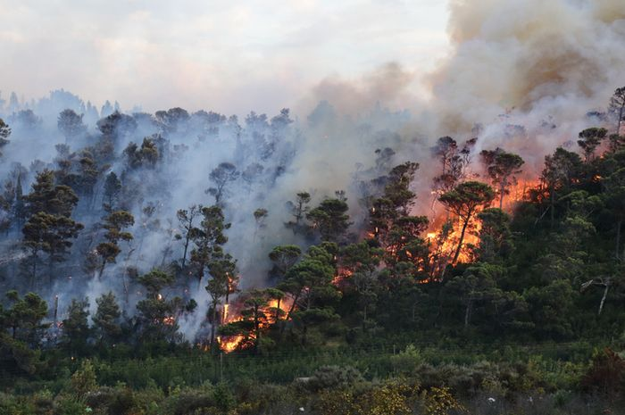

Karhutla Masih Terjadi di Kalimantan
Kebakaran hutan dan lahan (karhutla) masih terjadi di Kalimantan. Sejumlah daerah di Kalimantan terdampak kabut asap, yang menyebar hingga dirasakan negeri tetangga. Asap pekat, lahan yang menghitam, hingga rusaknya habitat satwa liar menjadi gambaran nyata dari kebakaran yang terus menjadi perhatian. Ketika api mulai melahap kawasan hutan dan lahan gambut, dampaknya tidak hanya merusak ekosistem, tetapi juga mengancam kehidupan masyarakat yang tinggal di sekitarnya.
Baca Selengkapnya